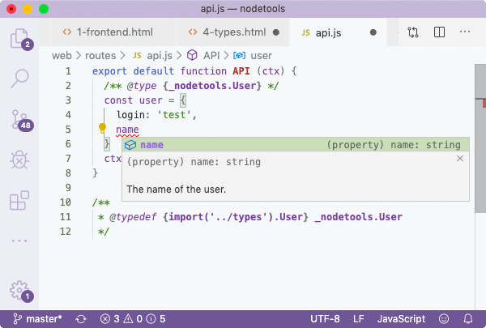
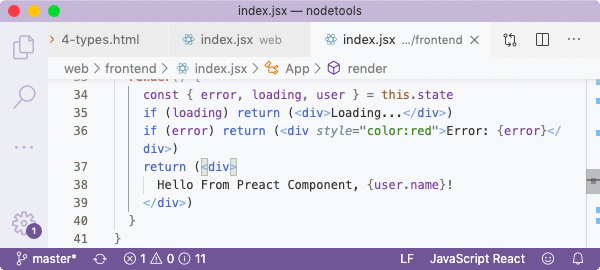

##! Universal Types
The types that we're using are applicable both for server-side an client-side, therefore we can reuse them by importing from both places. In code that's going to be compiled with _Closure_ though, we need to add the `@suppress` annotation, otherwise the compiler will print a warning. Although the compiler won't discover those types from source code, we'll pass it to it via externs. For back-end, we use simple `import`. Below is our API route.
The fact that we import types, provides us with the desired experience: we can invoke auto-completions on the created object:

For frontend, it is the same, as we annotate the `state.user` object with the user type. This not only prevents the compiler from mangling destructured property names of the received object, but also allows us to access the hints.

_TypeScript_ is said to be JavaScript that scales, that is great for large-scale app development, exactly because it provides convenient way to work with types for back-end and front-end. But I don't believe that using a new language and a proprietary typings infrastructure, is a solution. _NodeTools_ is a stack for pure JS development, and we've achieved the same result with JSDoc annotations. Keeping types in a separate place and then compiling them, and importing from places we need, works just as well and allows to stay *independent*.
The types for _VSCode_ are generated into the `types/index.js` file:
We added `export {}` at the top to make it possible to import types from other files, which is otherwise impossible. The `namespace` argument in the ``typal`` marker is needed to preserve namespaces, which a convention in _NodeTools_ since we need to match the externs' namespace. You can omit namespace altogether for simple applications but it's just how I do things.
Any time we updates types.xml file, we'll run command to recompile types and externs. By the time _Node Tools 2_ is released, we'll have a watch mode also, but for now we need to make use of scripts manually:
_Idio_'s frontend and server-side rendering only work with _Preact_ 8 at the moment, without fragments support since that requires a small change to the parser. I've not had a reason to upgrade to _Preact_ 10, but when there's time, I will do. The server is then started with command.